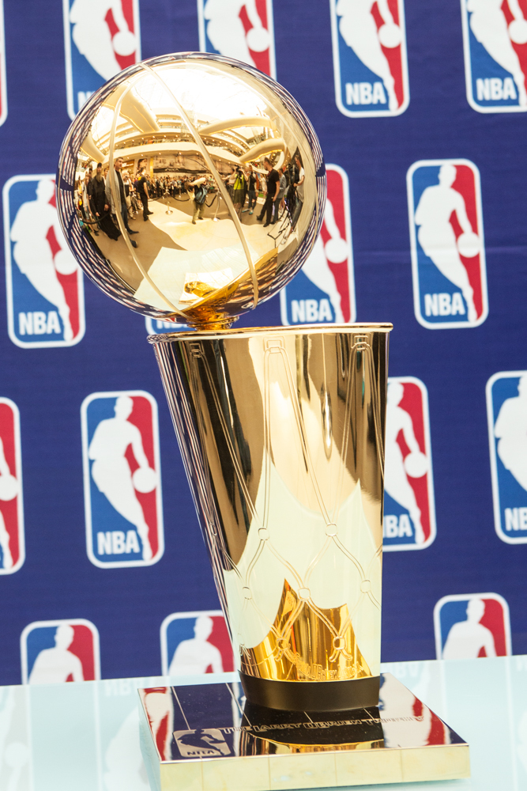

Майкл Джордан
Майкл Дже́ффри Джо́рдан (Michael Jeffrey Jordan) — американский баскетболист, бывший игрок НБА. Лучший баскетболист в истории (по версии экспертов ESPN).


 Википедия о Джордане
Википедия о Джордане
Командные достижения

-
6-кратный чемпион Центрального дивизиона в составе «Чикаго Буллз» по итогам регулярного сезона: 1991, 1992, 1993, 1996, 1997, 1998.
-
6-кратный чемпион Восточной конференции в составе «Чикаго Буллз»: 1991, 1992, 1993, 1996, 1997,1998.
-
6-кратный чемпион Национальной Баскетбольной ассоциации в составе «Чикаго Буллз»: 1991, 1992,1993, 1996, 1997, 1998.
 Индивидуальные достижения
Индивидуальные достижения
-
3 раза был признан Лучшим новичком месяца: ноябрь 1984, январь и март 1985.
-
Новичок года НБА: 1985.
-
Член первой сборной лучших новичков НБА: 1985
-
Лучший новичок года по версии Sporting News: 1985.
-
5-кратный обладатель приза Самого ценного игрока регулярного чемпионата: 1988, 1991, 1992, 1996, 1998.
-
6-кратный обладатель приза Самого ценного игрока финальной серии: 1991, 1992, 1993, 1996, 1997, 1998.
-
7-кратный обладатель приза Самого ценного игрока по версии Sporting News: 1988, 1989, 1991, 1992, 1996—1998.
-
Лучший оборонительный игрок НБА: 1988.
-
10 раз был включен в первую сборную всех звёзд НБА: 1987—1993, 1996—1998.
-
1 раз был включен во вторую сборную всех звёзд НБА: 1985.
-
9 раз был включен в сборную всех звёзд защиты НБА: 1988—1993, 1996—1998.
-
По ходу карьеры 25 раз был признан лучшим игроком недели и 16 раз — игроком месяца.
-
Чемпион конкурса по броскам сверху: 1987, 1988.

-
14 раз принимал участие в Матче всех звёзд: 1985—1993, 1996—1998, 2002, 2003.
-
3 раза был признан Самым ценным игроков Матча всех звёзд: 1988, 1996, 1998.